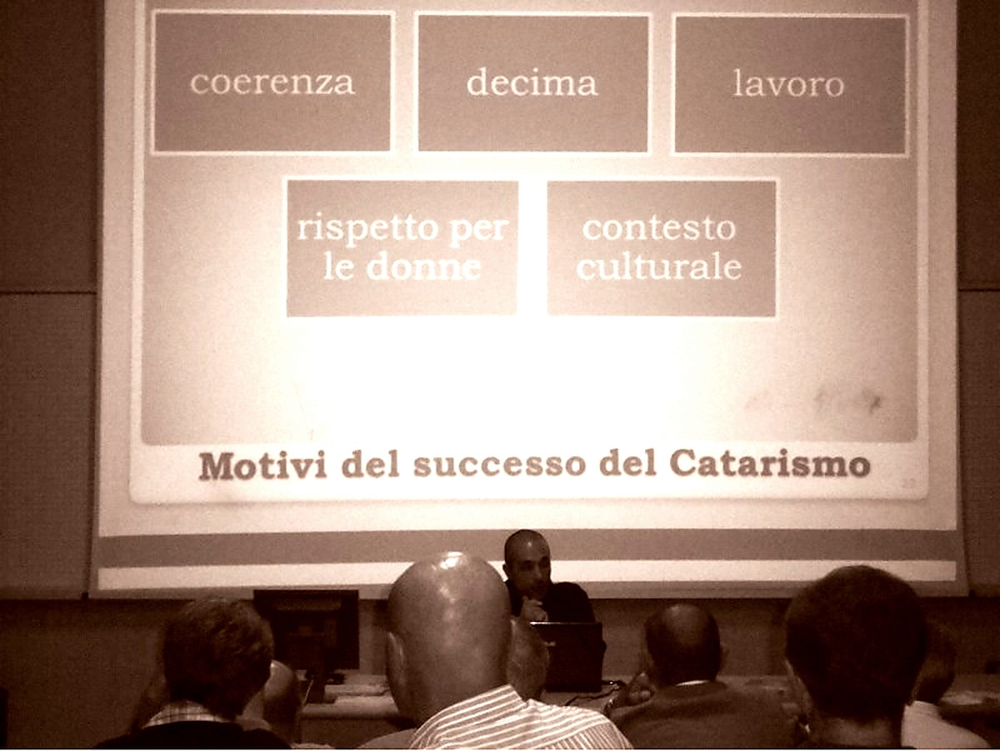

Qui suis-je ?
Simone Pozzi · À la recherche de la Patrie de Lumière

La recherche spirituelle accompagne ma vie depuis la petite enfance. Mes premiers souvenirs liés au monde de l’esprit remontent à l’âge de cinq ou six ans. J’ai commencé à méditer enfant, notamment à travers les arts martiaux, puis je me suis intéressé aux énergies subtiles et à la pratique du magnétisme.
Dans la bibliothèque familiale, un vieux livre, Detti segreti di Gesù, édité par Luigi Moraldi, m’a profondément marqué. Un passage comparant le monde à un cadavre a ravivé les questions qui m’habitaient déjà : qu’est-ce que ce monde, d’où venons-nous et qui sommes-nous ?
Vers treize ans, j’ai approfondi l’ésotérisme. À vingt-trois ans, je suis devenu végétarien. Dès dix-huit ans, j’ai fréquenté monastères, ermitages, temples et ashrams de différentes traditions.
À vingt-sept ans, j’ai quitté mon travail de chef d’équipe pour vivre plusieurs mois dans un ermitage sur les collines de Vérone. J’ai ensuite passé environ un an dans un monastère bénédictin ouvert au dialogue interreligieux, suivi une période de formation au séminaire et séjourné dans un ashram en Inde.
Je ne cherchais pas tant une religion à laquelle appartenir qu’une réponse à des interrogations anciennes. Dans la Gnose, et particulièrement dans le dualisme radical, j’ai reconnu une réponse aux questions mûries au fil de ce parcours : le Père bon n’est pas le créateur de ce monde, la matière n’est pas notre patrie et l’Esprit n’y appartient pas. Je ne cherchais pas une spiritualité destinée à rendre cette existence plus confortable, mais une connaissance capable de dévoiler notre captivité et la possibilité de nous en libérer.
En 2009, j’ai fondé l’association gnostique Chiesa Catara, consacrée à la transmission et à l’étude spirituelle. Le catharisme demeure important pour moi, sans pour autant limiter ma recherche à une seule tradition.
Conférences et transmission

Mes publications
- Sulle Ali di Dio — journal de ma vie en ermitage et de mon chemin vers la Gnose
- Stranieri di passaggio — roman symbolique sur la condition humaine et la libération
- Esegesi del Vangelo di Tommaso secondo uno gnostico — une lecture personnelle et spirituelle des paroles de Jésus
Je vis aujourd’hui au Paraguay et je continue de partager mes réflexions à travers la chaîne Meditazione e Gnosi.